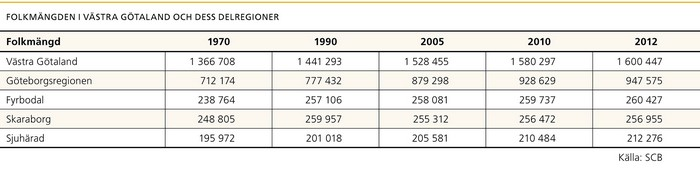

Geografi: Som ett Sverige i miniatyr
Västra Götaland är som ett Sverige i miniatyr – storstad och landsbygd, småsamhällen och mellanstora städer. Naturen växlar från kustlandskap till storskog med slättland och hagmarker däremellan.
Geografiskt är Västra Götaland ett av de största länen i Sverige med en landareal på 23 797 kvadratkilometer, vilket utgör sex procent av Sveriges landyta. Det är cirka 24 mil såväl i nordsydlig som i västöstlig riktning. Det finns 29 611 öar i Västra Götaland varav 150 är bebodda. Länet består av 49 kommuner. Den till ytan största kommunen är Ulricehamn på 1046 kvadratkilometer och den minsta är Öckerö kommun på 26 kvadratkilometer.
År 2001 bildades fyra delregionala kommunalförbund i Västra Götaland: Göteborgsregionen, Fyrbodal, Skaraborg och Sjuhärad. Syftet var att skapa bra och effektiva samarbetsorganisationer för en sammanhållen, enkel och mer rationell hantering av de mellankommunala frågorna. En del av statistiken i denna app är uppdelad efter de fyra delregionerna. I Göteborgsregionen ingår även Kungsbacka som inte ingår i Västra Götalands län.
Folkmängd: 1,6 miljoner invånare
Befolkningsmässigt är Västra Götaland Sveriges näst största län med mer än 1,6 miljoner invånare. Flest människor bor i storstadskommunen Göteborg med med 526 000 invånare. Dals-Ed är den minsta kommunen befolkningsmässigt med 4700 invånare.
Befolkningen är ojämnt fördelad över Västra Götalands yta. Förutom till Göteborgsregionen är befolkningen i huvudsak koncentrerad till områdena kring Borås, Skövde och Trestad (Trollhättan, Vänersborg och Uddevalla). Befolkningstätheten i Västra Götaland är 67 invånare per kvadratkilometer. Bland kommunerna ligger Göteborg högst med drygt 1000 invånare per kvadratkilometer och Dals-Ed lägst med drygt sex invånare per kvadratkilometer. Den genomsnittliga befolkningstätheten i Sverige är 23 invånare per kvadratkilometer, i Stockholms län bor 326 invånare per kvadratkilometer och i Skåne 115 per kvadratkilometer.

Befolkningsutveckling: Folkmängden ökar
Vid årsskiftet 2012/2013 uppgick folkmängden i Västra Götaland till 1600 447 personer, vilket motsvarar 17 procent av Sveriges befolkning. Under 2012 ökade befolkningen med nästan 10 000 invånare vilket ligger i nivå med de senaste årens befolkningsökning. Liksom tidigare år var det Göteborgsregionen som ökade mest. Nästan 90 procent av Västra Götalands befolkningstillväxt skedde i Göteborgsregionen, som hyser drygt hälften av befolkningen.

Befolkningsförändring i kommunerna
Befolkningsutvecklingen i Sverige har sedan mitten av 90-talet i stora drag karaktäriserats av att storstadsregionerna och regioncentra ökar i befolkning, medan många kommuner utanför dessa områden minskar. Inom Västra Götaland är det framförallt Göteborg med angränsande kommuner samt Strömstad i länets nordvästra hörn, som upplevt den kraftigaste tillväxten. Störst befolkningsminskning har samtidigt skett i nordöstra Skaraborg samt i norra Fyrbodal.
Medan befolkningstillväxten i Göteborgsregionen beror på både det ökade antalet inflyttade och det fortsatt stora födelseöverskottet, har folkökningen i andra delar av Västra Götaland skett endast till följd av det positiva flyttnettot.


Flyttningar: Ökade flyttströmmar till och från utlandet
Totalt flyttade nästan 41 000 personer till Västra Götaland år 2012. Av dem kom 15 000 från utlandet, varav den största gruppen var hemvändande svenska medborgare. Den andra stora invandrargruppen var från Somalia. I gränskommunerna Strömstad och Åmål är det invandringen från Norge som dominerar. Bland inrikes flyttare kom de största strömmarna från Stockholms, Skåne och Hallands län.
Göteborgsregionen har stark dragningskraft på invånare från andra delar av Sverige och omvärlden. Även inom länet går flyttströmmarna i stor utsträckning till Göteborgsregionen.
Mångfald: Det mångkulturella Västra Götaland
År 2012 hade Västra Götaland 245 000 invånare som var födda utomlands och ytterligare 79 000 som var födda i Sverige men hade utländsk bakgrund1. Andelen utrikes födda invånare varierar mycket mellan Västra Götalands delregioner och kommuner. Två tredjedelar av de utrikes födda bor i Göteborgsregionen. Den kommun i Västra Götaland med lägst andel utrikes födda är Öckerö kommun med fyra procent, högst andel har Göteborgs kommun med 23 procent. Ungefär 130 nationaliteter finns representerade i Västra Götaland.
1 Personer med utländsk bakgrund definieras som personer som är utrikes födda, eller inrikes födda med två utrikes födda föräldrar.
Befolkningsstruktur: En allt äldre befolkning
Västra Götaland har, i likhet med många andra regioner och länder i Europa, en utveckling där befolkningen blir allt äldre. Även om födelsetalet efter sekelskiftet 2000 har stigit och kommer att öka det närmaste decenniet, har låga födelsetal kring sekelskiftet 2000 och en stadigt ökad livslängd bidragit till att genomsnittsåldern stigit. Befolkningsprognosen visar att andelen äldre kommer att öka avsevärt under det närmaste decenniet. Detta resulterar i att allt färre måste försörja allt fler. Ett sätt att sammanfatta vad befolkningens åldersstruktur kan betyda för de materiella livsvillkoren är att relatera summan av antalet äldre (65+ år) till antalet i yrkesaktiv ålder (16–64 år), så kallad äldrekvot. Äldrekvoten för Västra Götaland ligger på 29, vilket betyder att 100 personer i yrkesaktiv ålder måste försörja 29 personer i åldersgruppen 65 år och äldre. Kvoten varierar kraftigt mellan kommunerna i Västra Götaland. Den lägsta äldrekvoten har Göteborgs kommun (22) följt av de kringliggande kommunerna. Den högsta äldrekvoten har Sotenäs (49) och Gullspång (48).
Befolkningstäthet: Stora skillnader i befolkningstäthet
Inom Sverige, men också i ett europeiskt perspektiv, varierar befolkningstätheten kraftigt mellan olika regioner. I Sverige är befolkningstätheten i särklass högst i Stockholm med strax över 300 invånare per kvadratkilometer år 2011. Därefter följer de två övriga storstadsregionerna Sydsverige (Skåne och Blekinge län) med cirka 100 invånare per kvadratkilometer samt Västsverige (Västra Götaland och Hallands län) med 64 invånare per kvadratkilometer.
Detta kan jämföras med de två mest glest befolkade regionerna i Sverige, Mellersta Norrland och Övre Norrland med 5, respektive 3 invånare per kvadratkilometer. Sverige är i ett europeiskt perspektiv ett glesbefolkat land. I kartan här intill jämförs befolkningstätheten mellan olika europeiska regioner. Här framgår att stora delar av de nordiska länderna i en europeiskt jämförelse är glest befolkade.
- Stäng meny
- Start
- Geografi och befolkning
 Geografi: Som ett Sverige i miniatyr
Geografi: Som ett Sverige i miniatyr- Folkmängd: 1,6 miljoner invånare
- Befolkningsutveckling: Folkmängden ökar
- Befolkningsförändring i kom
- Flyttningar: Ökade flyttströmmar till och från utl
- Mångfald: Det mångkulturella Västra Götaland
- Befolkningsstruktur: En allt äldre befolkning
- Befolkningstäthet: Stora skillnader i befolkningst
- Den ekomoniska dimensionen
- Den sociala dimensionen
- Miljödimensionen
- Näringsliv
- Kompetens och kunskap
- Infrastruktur och kommunikationer
- Kultur
- Hälsa
- Tabeller